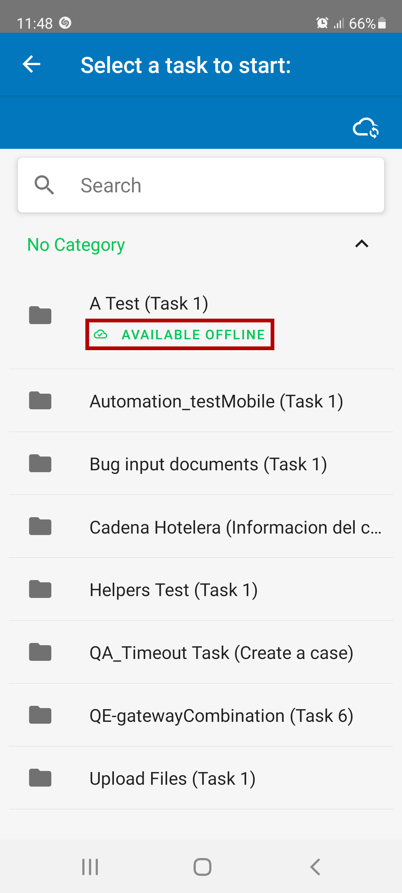
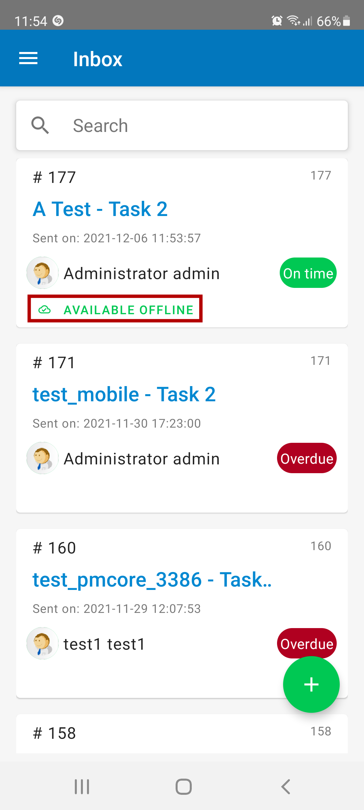
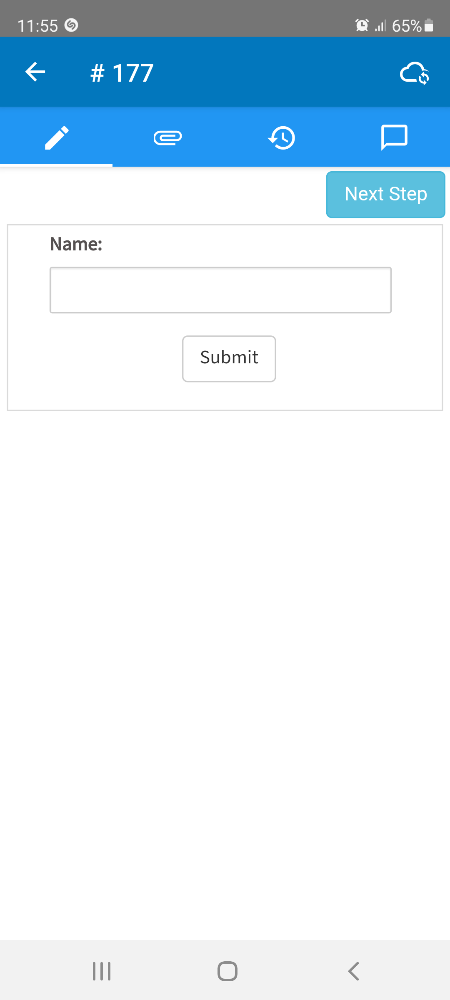
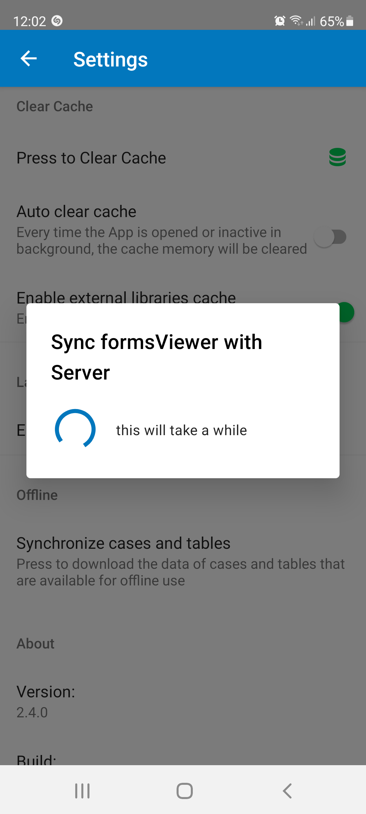
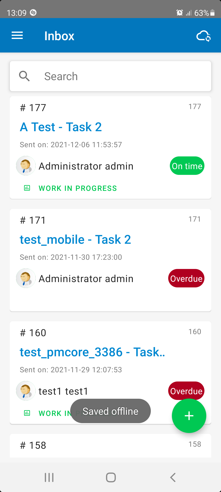
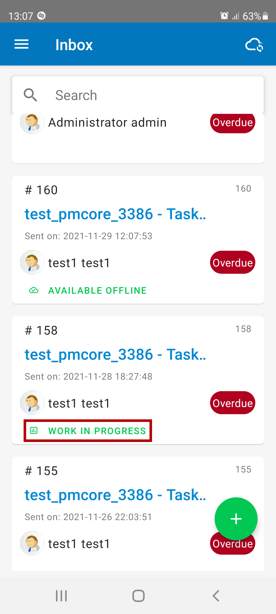
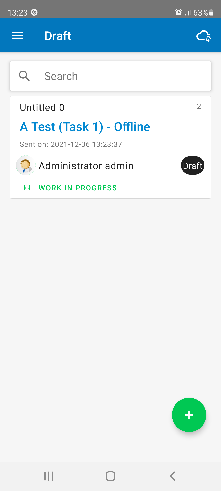

Current Stable Mobile Version: 2.4.0 | Release Notes
Current Stable Mobile Version: 2.4.0 | Release Notes
Overview
ProcessMaker can save your work on your device when the internet connection is lost. Nothing is worse than losing all the data you entered simply due to an unreliable or intermittent internet connection. ProcessMaker captures your data without the worry that a lack of connectivity cause you to lose your work. New cases cannot be started when the mobile device is offline, but this feature allow users to finish working on the current task in a case and save the data locally on the mobile device, so that it can be submitted later when the internet connection is restored.
ProcessMaker Compatibility
This mobile version is available in ProcessMaker 3.2.3 and later.
Functionality
This section lists the available offline functions:
- Enable a Task for Offline Support
- Setup an offline task to automatically route completed offline cases
- Start a new case
- Open a case
- Evaluate step conditions (with some constraints)
- Manually get up to 100 offline cases into the device
- Upload multiple files to a case
-
Uploaded images resize the width of landscape images to 1080px and are scaled accordingly. Portrait images also resize height to 1080px and are scaled accordingly. The compression ratio used when resizing is 60%.
Available Version: As of ProcessMaker Mobile 2.2.5
- Synchronize offline data
- Collect cases and forms to work offline
- Save offline data
- Handle offline data
- Store form data in the device when working offline
- Merge device with case data when the connection is reestablished
- Check and warn the user about data conflicts
Limited Functionality
Only simple step conditions can be evaluated because the data to evaluate the comparison is available in the forms.
- Conditional evaluation must support the following comparison operators: ==, !=, <, >, <=, >=.
- Logical operators supported are: &&, ||, !.
- ProcessMaker variable markups supported are: @@, @#, @=.
Constraints
The following scenarios are not available while working offline:
- Controls with queries like dropdowns and suggests will not show the items, because executing queries requires connectivity with the server.
- Dependent controls do not work because dependent controls require connectivity with the server to query control values.
- Suggest control is not supported, not even for items created from the Options property.
- Uploading video or audio to a case is not supported.
- Geo map controls are not supported offline. However, if the Google Maps application is open before losing Internet connectivity, the local instance can be sent offline.
- saveForm and submitForm helpers are not supported because they work with an endpoint that records the data in the server.
- REST and SOAP APIs will not work.
- Triggers before and after a step are ignored because triggers are executed in the server.
- Manual Routing is not supported because the list of users is populated from the server.
- Claiming a case is not supported to avoid having conflicts with other offline or online users that might have claimed the case.
- The routing screen doesn't display for those cases that are automatically routed when connectivity is reestablished.
Note: Unless using PM Tables offline, the following constraints apply:
Enable a Task for Offline Support
A task works offline as long as it is enabled in the Activity Properties by following the next steps:
1. In the process designer, right click on a task.
2. Click Properties.

3. In the Activity Properties, click the Mobile option.
4. Check the Enable this task for offline use option to activate the offline support.

Take into acount the following scenarios:
- If the activity is a starting task then users are allowed to start a case in this task while working offline.
- If the activity is not a starting task then users are allowed to open those cases that are going through this activity while working offline.
- The case is routed automatically if in the activity properties, the Route case when back online is checked. Otherwise, the user in ProcessMaker mobile can open the form again while online to route it.

Offline View
The Offline Cloud icon displays as long as you are working without server connectivity at the right-top of the screen.

Take into account that there is an offline notification in the following scenarios:
-
Cases that can be started offline are marked with the label Available Offline.

-
Trays display cases that can be worked offline are marked with the label Available Offline.

-
As of ProcessMaker Mobile 2.4.0, when running cases display the Offline Cloud icon at the right-top of the screen.

Download Offline Cases
Users in ProcessMaker mobile can download all cases that can be worked offline to a device, as well as the resources required to start offline cases. Otherwise, the cases displayed in the Inbox tray are the ones that are going to be stored in the device for offline use.
This is useful when users plan to collect data offline for several cases. For example, when a user has to collect data for thirty cases in the country, download the cases with this option ensures that the user has data of the 30 cases as well as all the resources needed to start cases offline.
The operation can be performed from the Settings menu by tapping the Synchronize cases and tables option:

The operation finishes when the Sync formsViewer with Server screen disappears.

Offline Case Status
Labels display at the bottom of the card when a case is opened or created offline:
- The label is Work in progress when:
- The task is not setup to automatically route the case when recovering connectivity.
- You didn't reach the last step of the task, but instead left the case incomplete.
- The label is Sending when:
- You have completed the forms up to the last step of the task and the task is setup to route offline cases.
Take into account the following scenarios:
- If a case with the Sending label was opened from the draft list, it will change its status to Work in progress, and you will have to go through all steps to set the case to the Sending status again.
- When the last step of the case is completed, the previous Draft or Inbox case list displays. An alert displays depending on the case status:
- The Saved offline alert for "Work in progress" label
- The The case will be sent when back online alert for "Sending" label
Connectivity Lost While Working Online
You are prompted to save and go back to the Inbox tray if connectivity is lost while working a case that was opened or started offline, even if the task supports offline use. The prompt triggers when you try to save the information. The prompt appears if the case is saved in the last step of the task. It alerts Saved offline and is routed automatically to the server when back online.

After the case automatically saves data, the case in the tray is tagged with Work in Progress.

Cases Started Offline
While offline, only starting tasks that allow offline support are listed to start cases. When a case is created offline it is listed in the draft list like in the graphic below:

Take into account the following features in cases that are started offline:
- Case title and case number remain empty.
- The Sent on date refers to the case date created in the device while offline. The date will be updated after the case is successfully created in ProcessMaker.
- Cases created offline with the Work in progress label are created in ProcessMaker when you interact with the case while online. Meanwhile, the case remains saved in the device and is listed under Draft list.
- Cases with the Sending label are automatically routed when the connection is reestablished.
Data Conflicts
Cases with the Work in progress label check for data conflicts after the case is reopened online.
The application checks if the starting offline data stored in the device is matching with the data stored in the server. If the information in the server is ahead, you are prompted to decide whether to keep the data from the device or discard it. If the data is discarded then all changes stored locally in the device are lost and the case reloads with the server data.
Offline PM Tables and Dependent Fields
ProcessMaker Mobile can connect in offline mode to PM Tables that have been previously synchronized. This helps to populate dependent fields with SQL queries. For this purpose, follow the next actions:
- Run SQL queries for dependent fields. For this purpose, data synchronizes through:
Run SQL Queries For Dependent Fields
To run SQL queries for dependent fields to work when ProcessMaker Mobile is offline, follow the next steps:
Create a PM Table including data and enable it to use it in offline mode. To do this, see the PM Tables page.
Create a Dynaform that uses the SQL property to populate a control, which retrieves information from the PM Table created in the previous step. To do this, see Dynaforms and dependent fields.
Assign that Dynaform as a step to a task. To do this, see Tasks - Steps.
Enable the last task for offline support. To do this, see Enable a Task for Offline Support.
Go to the ProcessMaker Mobile app, and retrieve the offline data through the methods described in the following sections. See Download offline PM Tables.
Turn off the connectivity of your mobile device to work in offline mode.
Create a case for the Dynaform previously created.
Expected Result: Dependent fields populated with values.
Exceptions: Display a message if the SQL query fails to retrieve the data in offline mode: The field {field name} cannot be populated in offline mode.
Other Details: Values displayed in offline mode work with all controls that support SQL queries and dependent fields.
Download Offline PM Tables
There are two ways to download Offline PM Tables:
Download Manually Offline PM Tables
To download manually offline PM Tables, follow the next steps:
Log on the ProcessMaker Mobile app.
Go to Settings.
Click Get offline cases and tables to download the offline resources.
Expected Result: All PM Tables enabled as offline clones into the ProcessMaker Mobile app to be used offline. ProcessMake Mobile implements a DBMS that supports similar characteristics to MySQL 5.6 and 5.7, towards creating similar structures and execute similar queries.
Exceptions: Take into account the following exceptions:
- If a PM Table cannot be created because it contains an incompatible structure, it displays a toast message at the end of the process that summarizes the incompatibilities. For example: Unsupported column type for {table name}.{column name}
- If a PM Table cannot be created due to an unknown circumstance, it displays a toast message at the end of the process that summarizes which tables were not successfully downloaded as follows: Cannot create tables {table name1}, {table name2}, ... and {table name3} or Cannot create table {table name} was not successfully created.
- ProcessMaker Mobile does not support tables from external DataBase connections.
- ProcessMaker Mobile does not support the Array Variable type.
Other Details: Clearing the ProcessMaker Mobile app cache also download the offline PM Tables.
Download Automatically Offline PM Tables
The PM Tables synchronize automatically. So, the manual option above may not need to be used other than during rare events or error situations. This synchronization occurs without the client being aware of it and takes place when:
- A user logs on the ProcessMaker Mobile app. The app downloads and setups the PM Tables specified for offline use.
- The ProcessMaker Mobile app goes to foreground. It means that when the app opens or when it switches from the background to the foreground on the device, (Example: Switching between your Message app to the already open ProcessMaker app) it automatically retrieves these PM Tables and stores them in the device to be used in offline mode.
Expected Result: The PM Tables and data should be synchronized anytime when you log on the ProcessMaker Mobile app, or when the app opens/focusses on your device. ProcessMaker Mobile implements a DBMS that supports similar characteristics to MySQL 5.6 and 5.7, towards creating similar structures and running similar queries.
Other Details: It works with dependent fields and with all elements that support the SQL property.
Exceptions: ProcessMaker Mobile does not support the following:
- Tables from external DataBase connections.
- The Array Variable type.